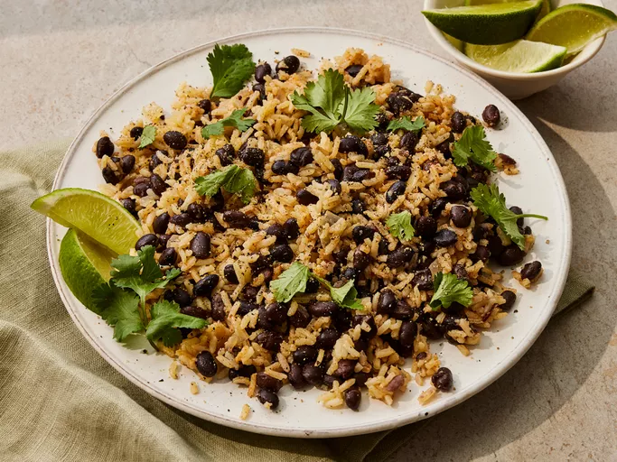

Black Beans and Rice

Black Beans and Rice
Black beans and rice make a great 30-minute vegetarian meal
that's filling, delicious, and cheap!
Great as a side dish or in a burrito bowl, too.
Ingredients
- 1 teaspoon olive oil
- 1 onion, chopped
- 2 cloves garlic, minced
- ¾ cup uncooked white rice
- 1 ½ cups low sodium, low fat vegetable broth
- 3 ½ cups canned black beans, drained
- 1 teaspoon ground cumin
- ¼ teaspoon cayenne pepper
Steps
- Gather all ingredients
- Heat oil in a saucepan over medium-high heat. Add onion and garlic; cook and stir until onion has softened, about 4 minutes
- Stir in rice to coat; cook and stir for 2 minutes
- Add vegetable broth and bring to a boil. Cover, reduce to a simmer, and cook until liquid is absorbed, about 20 minutes
- tir in beans, cumin, and cayenne; cook until beans are warmed through
- Serve and enjoy!